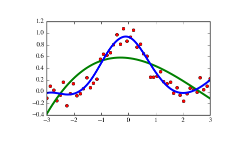

scipy.interpolate.UnivariateSpline¶
- class scipy.interpolate.UnivariateSpline(x, y, w=None, bbox=[None, None], k=3, s=None, ext=0, check_finite=False)[source]¶
One-dimensional smoothing spline fit to a given set of data points.
Fits a spline y = spl(x) of degree k to the provided x, y data. s specifies the number of knots by specifying a smoothing condition.
Parameters: x : (N,) array_like
1-D array of independent input data. Must be increasing.
y : (N,) array_like
1-D array of dependent input data, of the same length as x.
w : (N,) array_like, optional
Weights for spline fitting. Must be positive. If None (default), weights are all equal.
bbox : (2,) array_like, optional
2-sequence specifying the boundary of the approximation interval. If None (default), bbox=[x[0], x[-1]].
k : int, optional
Degree of the smoothing spline. Must be <= 5. Default is k=3, a cubic spline.
s : float or None, optional
Positive smoothing factor used to choose the number of knots. Number of knots will be increased until the smoothing condition is satisfied:
sum((w[i] * (y[i]-spl(x[i])))**2, axis=0) <= s
If None (default), s = len(w) which should be a good value if 1/w[i] is an estimate of the standard deviation of y[i]. If 0, spline will interpolate through all data points.
ext : int or str, optional
Controls the extrapolation mode for elements not in the interval defined by the knot sequence.
- if ext=0 or ‘extrapolate’, return the extrapolated value.
- if ext=1 or ‘zeros’, return 0
- if ext=2 or ‘raise’, raise a ValueError
- if ext=3 of ‘const’, return the boundary value.
The default value is 0.
check_finite : bool, optional
Whether to check that the input arrays contain only finite numbers. Disabling may give a performance gain, but may result in problems (crashes, non-termination or non-sensical results) if the inputs do contain infinities or NaNs. Default is False.
See also
- InterpolatedUnivariateSpline
- Subclass with smoothing forced to 0
- LSQUnivariateSpline
- Subclass in which knots are user-selected instead of being set by smoothing condition
- splrep
- An older, non object-oriented wrapping of FITPACK
- BivariateSpline
- A similar class for two-dimensional spline interpolation
Notes
The number of data points must be larger than the spline degree k.
NaN handling: If the input arrays contain nan values, the result is not useful, since the underlying spline fitting routines cannot deal with nan . A workaround is to use zero weights for not-a-number data points:
>>> w = np.isnan(y) >>> y[w] = 0. >>> spl = UnivariateSpline(x, y, w=~w)
Notice the need to replace a nan by a numerical value (precise value does not matter as long as the corresponding weight is zero.)
Examples
>>> import matplotlib.pyplot as plt >>> from scipy.interpolate import UnivariateSpline >>> x = np.linspace(-3, 3, 50) >>> y = np.exp(-x**2) + 0.1 * np.random.randn(50) >>> plt.plot(x, y, 'ro', ms=5)
Use the default value for the smoothing parameter:
>>> spl = UnivariateSpline(x, y) >>> xs = np.linspace(-3, 3, 1000) >>> plt.plot(xs, spl(xs), 'g', lw=3)
Manually change the amount of smoothing:
>>> spl.set_smoothing_factor(0.5) >>> plt.plot(xs, spl(xs), 'b', lw=3) >>> plt.show()
Methods
__call__(x[, nu, ext]) Evaluate spline (or its nu-th derivative) at positions x. antiderivative([n]) Construct a new spline representing the antiderivative of this spline. derivative([n]) Construct a new spline representing the derivative of this spline. derivatives(x) Return all derivatives of the spline at the point x. get_coeffs() Return spline coefficients. get_knots() Return positions of interior knots of the spline. get_residual() Return weighted sum of squared residuals of the spline approximation. integral(a, b) Return definite integral of the spline between two given points. roots() Return the zeros of the spline. set_smoothing_factor(s) Continue spline computation with the given smoothing factor s and with the knots found at the last call.